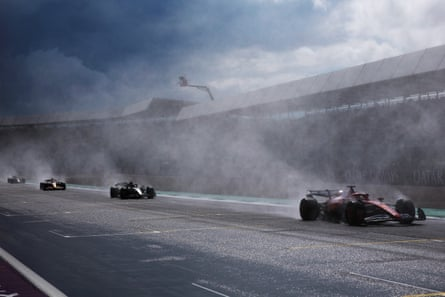
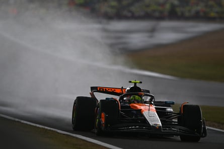

This year’s British Grand Prix already had a place in history as the 75th anniversary of Silverstone hosting the first Formula One race in 1950. Now it will be remembered as a milestone and career high for Lando Norris, a maiden win at his home race and the victory he has long coveted.
The British GP has thrown up swathes of superlative races in those 75 seasons and this year’s earned its place among them. Under gunmetal grey skies and lowering clouds an afternoon of incident and drama unfolded, of fortune and fury, and for one driver a moment of finally discharging a particularly unwanted monkey, as the old airfield once more proved a grand stage.
For Norris there was untrammelled joy. He has wanted this one since he began his F1 career in 2019. There were no tears as he took the flag, but just the sheer unbridled and enthusiastic joy that has endeared the 25-year-old to so many fans, not least the 10,000 who had packed out his dedicated Landostand at Stowe corner.
His victory across a race that veered from wet to dry conditions and back again, at times with startling ferocity, was a consummate and controlled drive as the treacherous surface tested the very best of the drivers. Yet he admitted it was not his hardest fought win because at its heart lay controversy. He beat his McLaren teammate Oscar Piastri into second, after the Australian had led for much of the race but was hit with a 10-second penalty for “erratic braking” just after a safety-car restart.
Where Norris could barely contain his glee, Piastri was furious in the car at the decision and afterwards exhibited a cold, focused indignation that all but seethed in the air around him, even as he declined to discuss his feelings on the decision in detail.
His taciturn approach a reflected a major concern among drivers that they dare not speak critically of the stewards or the FIA for fear the governing body will punish them. It is an unhealthy and deeply unsatisfying scenario for everyone involved.
Charles Leclerc (right) cuts through the wet conditions at Silverstone.Photograph: Mark Thompson/Getty Images
Piastri had taken the lead from Red Bull’s Max Verstappen – who later spun struggling for grip and finished in fifth as his title hopes spiralled further out of reach – early in the race. Then, at the end of a safety-car period as the lights went out, the Australian braked hard, looking for temperature in the tyres and dropping from 135mph to 32mph. Verstappen, behind him, moved over to avoid him, held his hands in the air in anger and immediately told his team: “Whoa, mate, fuck, he just suddenly slows down again.”.
The stewards investigated and concluded Piastri had braked “erratically”, forcing Verstappen to take “evasive action”. It was a conclusion with which the Australian disagreed, insisting afterwards the Dutchman did not have to evade him at all.
The 10 seconds cost him a likely win when he took them during a pit stop, giving Norris the lead. Piastri threw his McLaren round the track with a righteous fury and even asked his team to order Norris to switch places, so outraged was he.
McLaren, rightly, declined. Norris had earned his position and was at no point at fault. But it was an unedifying affair and, as Piastri observed, somewhat confusing given that at the recent Canadian Grand Prix the stewards had dismissed a protest by Red Bull that George Russell had similarly braked erratically, albeit in differing conditions.
For Norris, then, the plaudits and while he has had more impressive wins, he did not care. He had kept it clean and on the island while barrelling round with aplomb. Moreover, having won last weekend in Austria, these were his first back-to-back wins in F1 and has closed the gap to Piastri in the championship to just eight points. At the halfway point of the season it is clear the two McLaren drivers are now set to go blow for blow until the finale.
Lando Norris now has back-to-back victories after his success at Silverstone.Photograph: Rudy Carezzevoli/Getty Images
Behind this ecstasy and agony there was a moment of pure catharsis that surely everyone in F1 has long anticipated, if perhaps doubting it might ever come. In the tumult of the changing conditions as the track slipped between wet and dry and strategies were being concocted on the hoof, Sauber quietly pulled off a coup. After they called the perfect moment for Nico Hülkenberg to take fresh intermediate tyres, the German exploited it and found himself marching through the field with rapidity. By the final stages he was in third.
Hülkenberg has been competing in F1 since 2010 and at Silverstone was in his 239th race, during which period he has never taken a podium. But as the sun finally began to shine, there he was seeing off a chasing Lewis Hamilton to earn his very first place on the steps.
That his first and only trophy in F1 was made of Lego – as were they all, alongside the traditional RAC Trophy – will matter not a jot to the well-liked German, who celebrated with wild abandon alongside his team. Indeed so unexpected a place was it that Sauber had but two bottles of champagne laid on with which to celebrate. A shortfall corrected swiftly by the Mercedes and Aston Martin teams from their own readily stocked stash. It was a suitably noble gesture for another notable British GP.